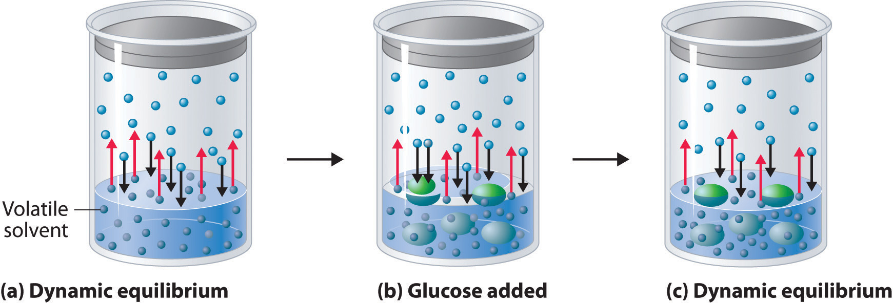
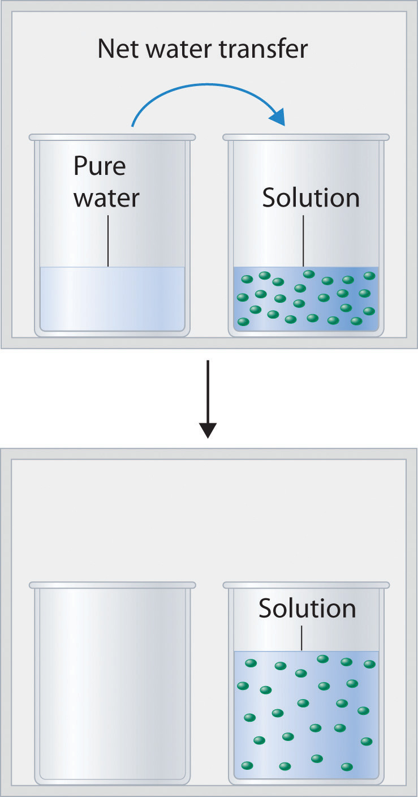
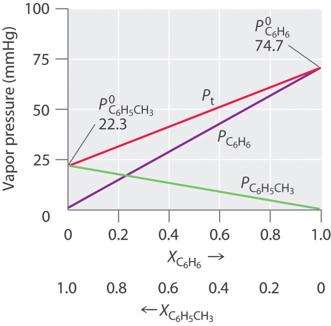
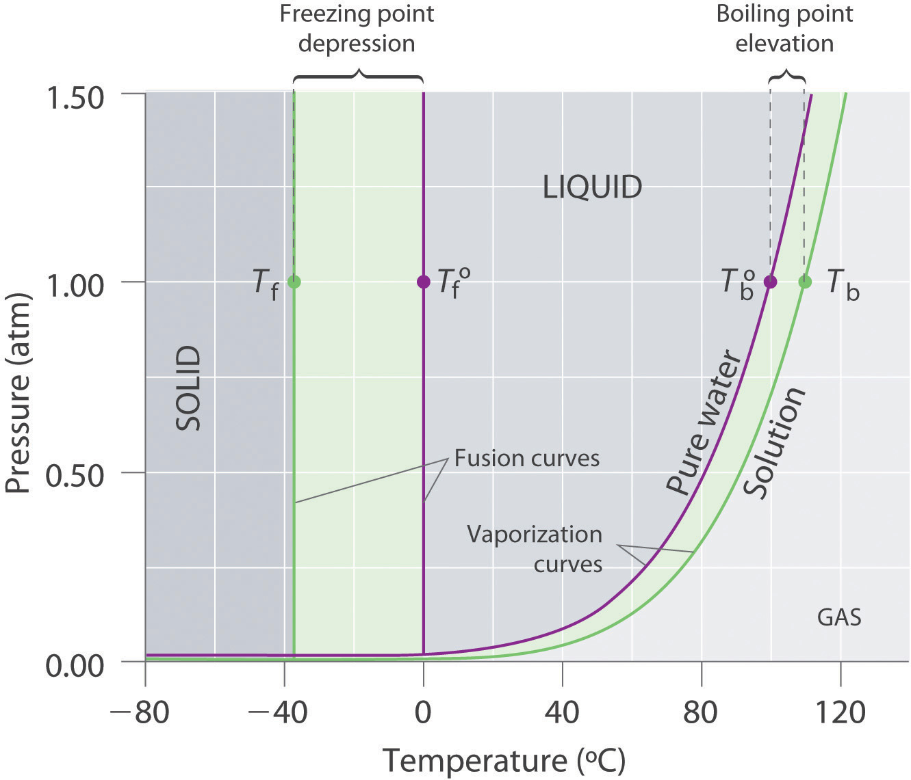
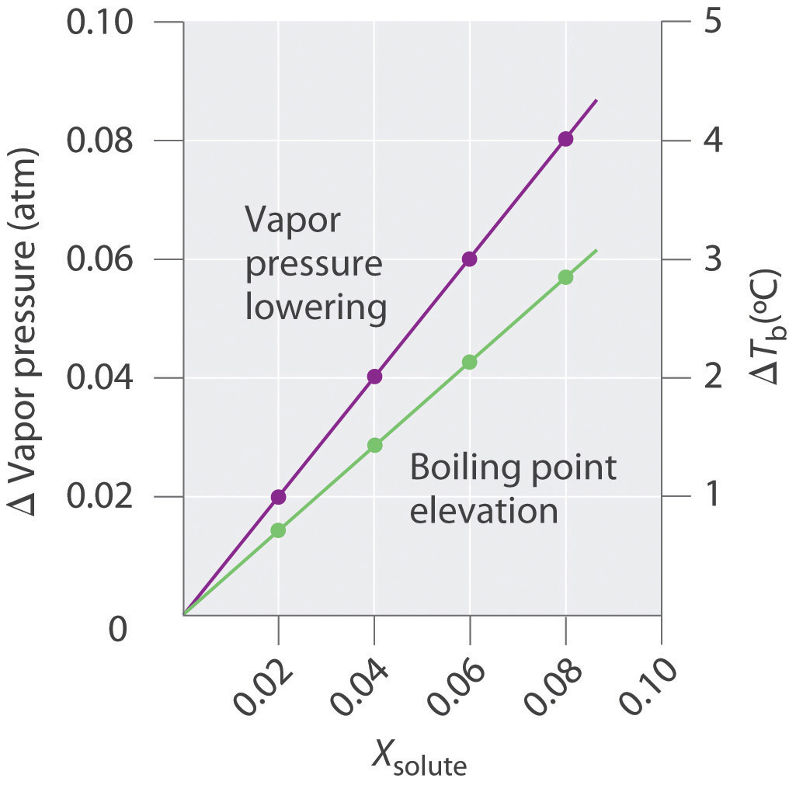
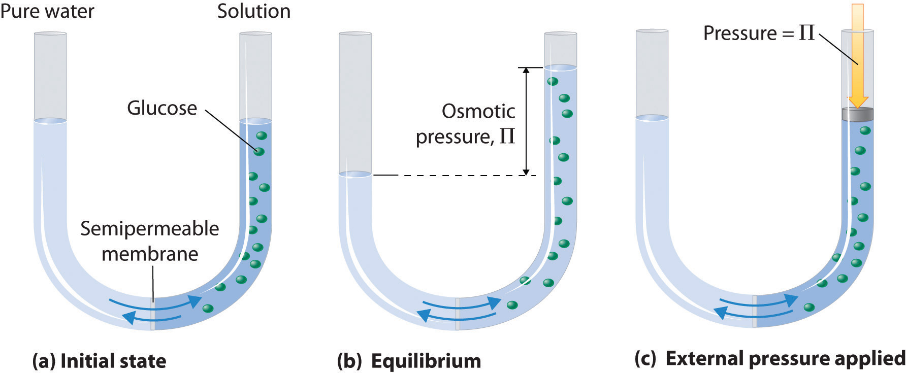
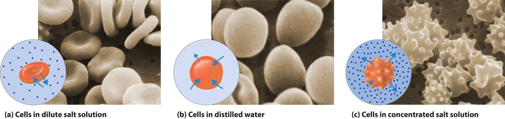
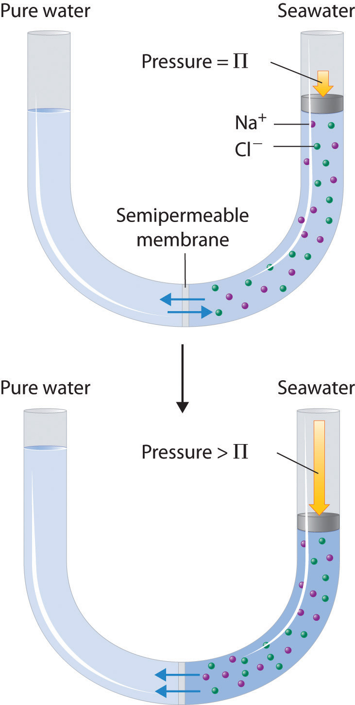
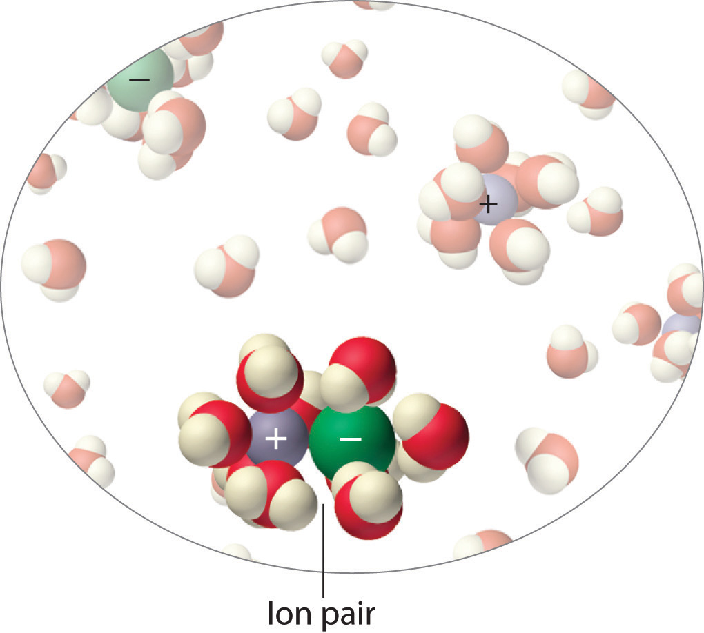

Many of the physical properties of solutions differ significantly from those of the pure substances discussed in earlier chapters, and these differences have important consequences. For example, the limited temperature range of liquid water (0°C–100°C) severely limits its use. Aqueous solutions have both a lower freezing point and a higher boiling point than pure water. Probably one of the most familiar applications of this phenomenon is the addition of ethylene glycol (“antifreeze”) to the water in an automobile radiator. This solute lowers the freezing point of the water, preventing the engine from cracking in very cold weather from the expansion of pure water on freezing. Antifreeze also enables the cooling system to operate at temperatures greater than 100°C without generating enough pressure to explode.
Changes in the freezing point and boiling point of a solution depend primarily on the number of solute particles present rather than the kind of particles. Such properties of solutions are called colligative propertiesA property of a solution that depends primarily on the number of solute particles rather than the kind of solute particles. (from the Latin colligatus, meaning “bound together” as in a quantity). As we will see, the vapor pressure and osmotic pressure of solutions are also colligative properties.
When we determine the number of particles in a solution, it is important to remember that not all solutions with the same molarity contain the same concentration of solute particles. Consider, for example, 0.01 M aqueous solutions of sucrose, NaCl, and CaCl2. Because sucrose dissolves to give a solution of neutral molecules, the concentration of solute particles in a 0.01 M sucrose solution is 0.01 M. In contrast, both NaCl and CaCl2 are ionic compounds that dissociate in water to yield solvated ions. As a result, a 0.01 M aqueous solution of NaCl contains 0.01 M Na+ ions and 0.01 M Cl− ions, for a total particle concentration of 0.02 M. Similarly, the CaCl2 solution contains 0.01 M Ca2+ ions and 0.02 M Cl− ions, for a total particle concentration of 0.03 M.These values are correct for dilute solutions, where the dissociation of the compounds to form separately solvated ions is complete. At higher concentrations (typically >1 M), especially with salts of small, highly charged ions (such as Mg2+ or Al3+), or in solutions with less polar solvents, dissociation to give separate ions is often incomplete (see Figure 13.21 "Ion Pairs"). The sum of the concentrations of the dissolved solute particles dictates the physical properties of a solution. In the following discussion, we must therefore keep the chemical nature of the solute firmly in mind.
Adding a nonvolatile solute, one whose vapor pressure is too low to measure readily, to a volatile solvent decreases the vapor pressure of the solvent. We can understand this phenomenon qualitatively by examining Figure 13.13 "A Model Depicting Why the Vapor Pressure of a Solution of Glucose Is Less Than the Vapor Pressure of Pure Water", which is a schematic diagram of the surface of a solution of glucose in water. In an aqueous solution of glucose, a portion of the surface area is occupied by nonvolatile glucose molecules rather than by volatile water molecules. As a result, fewer water molecules can enter the vapor phase per unit time, even though the surface water molecules have the same kinetic energy distribution as they would in pure water. At the same time, the rate at which water molecules in the vapor phase collide with the surface and reenter the solution is unaffected. The net effect is to shift the dynamic equilibrium between water in the vapor and the liquid phases, decreasing the vapor pressure of the solution compared with the vapor pressure of the pure solvent.
Figure 13.13 A Model Depicting Why the Vapor Pressure of a Solution of Glucose Is Less Than the Vapor Pressure of Pure Water
(a) When water or any volatile solvent is in a closed container, water molecules move into and out of the liquid phase at the same rate in a dynamic equilibrium. (b) If a nonvolatile solute such as glucose is added, some fraction of the surface area is occupied by solvated solute molecules. As a result, the rate at which water molecules evaporate is decreased, although initially their rate of condensation is unchanged. (c) When the glucose solution reaches equilibrium, the concentration of water molecules in the vapor phase, and hence the vapor pressure, is less than that of pure water.
Figure 13.14 "Transfer of Water to a Beaker Containing a Glucose Solution" shows two beakers, one containing pure water and one containing an aqueous glucose solution, in a sealed chamber. We can view the system as having two competing equilibria: water vapor will condense in both beakers at the same rate, but water molecules will evaporate more slowly from the glucose solution because fewer water molecules are at the surface. Eventually all of the water will evaporate from the beaker containing the liquid with the higher vapor pressure (pure water) and condense in the beaker containing the liquid with the lower vapor pressure (the glucose solution). If the system consisted of only a beaker of water inside a sealed container, equilibrium between the liquid and vapor would be achieved rather rapidly, and the amount of liquid water in the beaker would remain constant.
Figure 13.14 Transfer of Water to a Beaker Containing a Glucose Solution
(top) One beaker contains an aqueous solution of glucose, and the other contains pure water. If they are placed in a sealed chamber, the lower vapor pressure of water in the glucose solution results in a net transfer of water from the beaker containing pure water to the beaker containing the glucose solution. (bottom) Eventually, all of the water is transferred to the beaker that has the glucose solution.
If the particles of a solute are essentially the same size as those of the solvent and both solute and solvent have roughly equal probabilities of being at the surface of the solution, then the effect of a solute on the vapor pressure of the solvent is proportional to the number of sites occupied by solute particles at the surface of the solution. Doubling the concentration of a given solute causes twice as many surface sites to be occupied by solute molecules, resulting in twice the decrease in vapor pressure. The relationship between solution composition and vapor pressure is therefore
Equation 13.11
where PA is the vapor pressure of component A of the solution (in this case the solvent), XA is the mole fraction of A in solution, and is the vapor pressure of pure A. Equation 13.11 is known as Raoult’s lawAn equation that quantifies the relationship between solution composition and vapor pressure: , after the French chemist who developed it. If the solution contains only a single nonvolatile solute (B), then XA + XB = 1, and we can substitute XA = 1 − XB to obtain
Equation 13.12
Rearranging and defining we obtain a relationship between the decrease in vapor pressure and the mole fraction of nonvolatile solute:
Equation 13.13
We can solve vapor pressure problems in either of two ways: by using Equation 13.11 to calculate the actual vapor pressure above a solution of a nonvolatile solute, or by using Equation 13.13 to calculate the decrease in vapor pressure caused by a specified amount of a nonvolatile solute.
Ethylene glycol (HOCH2CH2OH), the major ingredient in commercial automotive antifreeze, increases the boiling point of radiator fluid by lowering its vapor pressure. At 100°C, the vapor pressure of pure water is 760 mmHg. Calculate the vapor pressure of an aqueous solution containing 30.2% ethylene glycol by mass, a concentration commonly used in climates that do not get extremely cold in winter.
Given: identity of solute, percentage by mass, and vapor pressure of pure solvent
Asked for: vapor pressure of solution
Strategy:
A Calculate the number of moles of ethylene glycol in an arbitrary quantity of water, and then calculate the mole fraction of water.
B Use Raoult’s law to calculate the vapor pressure of the solution.
Solution:
A A 30.2% solution of ethylene glycol contains 302 g of ethylene glycol per kilogram of solution; the remainder (698 g) is water. To use Raoult’s law to calculate the vapor pressure of the solution, we must know the mole fraction of water. Thus we must first calculate the number of moles of both ethylene glycol (EG) and water present:
The mole fraction of water is thus
B From Raoult’s law (Equation 13.11), the vapor pressure of the solution is
Alternatively, we could solve this problem by calculating the mole fraction of ethylene glycol and then using Equation 13.13 to calculate the resulting decrease in vapor pressure:
The same result is obtained using either method.
Exercise
Seawater is an approximately 3.0% aqueous solution of NaCl by mass with about 0.5% of other salts by mass. Calculate the decrease in the vapor pressure of water at 25°C caused by this concentration of NaCl, remembering that 1 mol of NaCl produces 2 mol of solute particles. The vapor pressure of pure water at 25°C is 23.8 mmHg.
Answer: 0.45 mmHg. This may seem like a small amount, but it constitutes about a 2% decrease in the vapor pressure of water and accounts in part for the higher humidity in the north-central United States near the Great Lakes, which are freshwater lakes. The decrease therefore has important implications for climate modeling.
Even when a solute is volatile, meaning that it has a measurable vapor pressure, we can still use Raoult’s law. In this case, we calculate the vapor pressure of each component separately. The total vapor pressure of the solution (PT) is the sum of the vapor pressures of the components:
Equation 13.14
Because XB = 1 − XA for a two-component system,
Equation 13.15
Thus we need to specify the mole fraction of only one of the components in a two-component system. Consider, for example, the vapor pressure of solutions of benzene and toluene of various compositions. At 20°C, the vapor pressures of pure benzene and toluene are 74.7 and 22.3 mmHg, respectively. The vapor pressure of benzene in a benzene–toluene solution is
Equation 13.16
and the vapor pressure of toluene in the solution is
Equation 13.17
Equation 13.16 and Equation 13.17 are both in the form of the equation for a straight line: y = mx + b, where b = 0. Plots of the vapor pressures of both components versus the mole fractions are therefore straight lines that pass through the origin, as shown in Figure 13.15 "Vapor Pressures of Benzene–Toluene Solutions". Furthermore, a plot of the total vapor pressure of the solution versus the mole fraction is a straight line that represents the sum of the vapor pressures of the pure components. Thus the vapor pressure of the solution is always greater than the vapor pressure of either component.
Figure 13.15 Vapor Pressures of Benzene–Toluene Solutions
Plots of the vapor pressures of benzene (C6H6) and toluene (C6H5CH3) versus the mole fractions at 20°C are straight lines. For a solution like this, which approximates an ideal solution, the total vapor pressure of the solution (Pt) is the sum of the vapor pressures of the components.
A solution of two volatile components that behaves like the solution in Figure 13.15 "Vapor Pressures of Benzene–Toluene Solutions" is an ideal solutionA solution that obeys Raoult’s law., which is defined as a solution that obeys Raoult’s law. Like an ideal gas, an ideal solution is a hypothetical system whose properties can be described in terms of a simple model. Mixtures of benzene and toluene approximate an ideal solution because the intermolecular forces in the two pure liquids are almost identical in both kind and magnitude. Consequently, the change in enthalpy on solution formation is essentially zero (ΔHsoln ≈ 0), which is one of the defining characteristics of an ideal solution.
Ideal solutions and ideal gases are both simple models that ignore intermolecular interactions.
Most real solutions, however, do not obey Raoult’s law precisely, just as most real gases do not obey the ideal gas law exactly. Real solutions generally deviate from Raoult’s law because the intermolecular interactions between the two components A and B differ. We can distinguish between two general kinds of behavior, depending on whether the intermolecular interactions between molecules A and B are stronger or weaker than the A–A and B–B interactions in the pure components. If the A–B interactions are stronger than the A–A and B–B interactions, each component of the solution exhibits a lower vapor pressure than expected for an ideal solution, as does the solution as a whole. The favorable A–B interactions effectively stabilize the solution compared with the vapor. This kind of behavior is called a negative deviation from Raoult’s law. Systems stabilized by hydrogen bonding between two molecules, such as acetone and ethanol, exhibit negative deviations from Raoult’s law. Conversely, if the A–B interactions are weaker than the A–A and B–B interactions yet the entropy increase is enough to allow the solution to form, both A and B have an increased tendency to escape from the solution into the vapor phase. The result is a higher vapor pressure than expected for an ideal solution, producing a positive deviation from Raoult’s law. In a solution of CCl4 and methanol, for example, the nonpolar CCl4 molecules interrupt the extensive hydrogen bonding network in methanol, and the lighter methanol molecules have weaker London dispersion forces than the heavier CCl4 molecules. Consequently, solutions of CCl4 and methanol exhibit positive deviations from Raoult’s law.
For each system, compare the intermolecular interactions in the pure liquids and in the solution to decide whether the vapor pressure will be greater than that predicted by Raoult’s law (positive deviation), approximately equal to that predicted by Raoult’s law (an ideal solution), or less than the pressure predicted by Raoult’s law (negative deviation).
Given: identity of pure liquids
Asked for: predicted deviation from Raoult’s law
Strategy:
Identify whether each liquid is polar or nonpolar, and then predict the type of intermolecular interactions that occur in solution.
Solution:
Exercise
For each system, compare the intermolecular interactions in the pure liquids with those in the solution to decide whether the vapor pressure will be greater than that predicted by Raoult’s law (positive deviation), approximately equal to that predicted by Raoult’s law (an ideal solution), or less than the pressure predicted by Raoult’s law (negative deviation):
Answer:
Recall from Chapter 11 "Liquids" that the normal boiling point of a substance is the temperature at which the vapor pressure equals 1 atm. If a nonvolatile solute lowers the vapor pressure of a solvent, it must also affect the boiling point. Because the vapor pressure of the solution at a given temperature is less than the vapor pressure of the pure solvent, achieving a vapor pressure of 1 atm for the solution requires a higher temperature than the normal boiling point of the solvent. Thus the boiling point of a solution is always greater than that of the pure solvent. We can see why this must be true by comparing the phase diagram for an aqueous solution with the phase diagram for pure water (Figure 13.16 "Phase Diagrams of Pure Water and an Aqueous Solution of a Nonvolatile Solute"). The vapor pressure of the solution is less than that of pure water at all temperatures. Consequently, the liquid–vapor curve for the solution crosses the horizontal line corresponding to P = 1 atm at a higher temperature than does the curve for pure water.
The boiling point of a solution with a nonvolatile solute is always greater than the boiling point of the pure solvent.
Figure 13.16 Phase Diagrams of Pure Water and an Aqueous Solution of a Nonvolatile Solute
The vaporization curve for the solution lies below the curve for pure water at all temperatures, which results in an increase in the boiling point and a decrease in the freezing point of the solution.
The magnitude of the increase in the boiling point is related to the magnitude of the decrease in the vapor pressure. As we have just discussed, the decrease in the vapor pressure is proportional to the concentration of the solute in the solution. Hence the magnitude of the increase in the boiling point must also be proportional to the concentration of the solute (Figure 13.17 "Vapor Pressure Decrease and Boiling Point Increase as Functions of the Mole Fraction of a Nonvolatile Solute"). We can define the boiling point elevation (ΔTb)The difference between the boiling point of a solution and the boiling point of the pure solvent. as the difference between the boiling points of the solution and the pure solvent:
Equation 13.18
where Tb is the boiling point of the solution and is the boiling point of the pure solvent. We can express the relationship between ΔTb and concentration as follows:
Equation 13.19
ΔTb = mKbwhere m is the concentration of the solute expressed in molality, and Kb is the molal boiling point elevation constant of the solvent, which has units of °C/m. Table 13.7 "Boiling Point Elevation Constants (" lists characteristic Kb values for several commonly used solvents.
Figure 13.17 Vapor Pressure Decrease and Boiling Point Increase as Functions of the Mole Fraction of a Nonvolatile Solute
For relatively dilute solutions, the magnitude of both properties is proportional to the solute concentration.
Table 13.7 Boiling Point Elevation Constants (Kb) and Freezing Point Depression Constants (Kf) for Some Solvents
| Solvent | Boiling Point (°C) | Kb (°C/m) | Freezing Point (°C) | Kf (°C/m) |
|---|---|---|---|---|
| acetic acid | 117.90 | 3.22 | 16.64 | 3.63 |
| benzene | 80.09 | 2.64 | 5.49 | 5.07 |
| d-(+)-camphor | 207.4 | 4.91 | 178.8 | 37.8 |
| carbon disulfide | 46.2 | 2.42 | −112.1 | 3.74 |
| carbon tetrachloride | 76.8 | 5.26 | −22.62 | 31.4 |
| chloroform | 61.17 | 3.80 | −63.41 | 4.60 |
| nitrobenzene | 210.8 | 5.24 | 5.70 | 6.87 |
| water | 100.00 | 0.51 | 0.00 | 1.86 |
The concentration of the solute is typically expressed as molality rather than mole fraction or molarity for two reasons. First, because the density of a solution changes with temperature, the value of molarity also varies with temperature. If the boiling point depends on the solute concentration, then by definition the system is not maintained at a constant temperature. Second, molality and mole fraction are proportional for relatively dilute solutions, but molality has a larger numerical value (a mole fraction can be only between zero and one). Using molality allows us to eliminate nonsignificant zeros.
According to Table 13.7 "Boiling Point Elevation Constants (", the molal boiling point elevation constant for water is 0.51°C/m. Thus a 1.00 m aqueous solution of a nonvolatile molecular solute such as glucose or sucrose will have an increase in boiling point of 0.51°C, to give a boiling point of 100.51°C at 1.00 atm. The increase in the boiling point of a 1.00 m aqueous NaCl solution will be approximately twice as large as that of the glucose or sucrose solution because 1 mol of NaCl produces 2 mol of dissolved ions. Hence a 1.00 m NaCl solution will have a boiling point of about 101.02°C.
In Example 8, we calculated that the vapor pressure of a 30.2% aqueous solution of ethylene glycol at 100°C is 85.1 mmHg less than the vapor pressure of pure water. We stated (without offering proof) that this should result in a higher boiling point for the solution compared with pure water. Now that we have seen why this assertion is correct, calculate the boiling point of the aqueous ethylene glycol solution.
Given: composition of solution
Asked for: boiling point
Strategy:
Calculate the molality of ethylene glycol in the 30.2% solution. Then use Equation 13.19 to calculate the increase in boiling point.
Solution:
From Example 8, we know that a 30.2% solution of ethylene glycol in water contains 302 g of ethylene glycol (4.87 mol) per 698 g of water. The molality of the solution is thus
From Equation 13.19, the increase in boiling point is therefore
The boiling point of the solution is thus predicted to be 104°C. With a solute concentration of almost 7 m, however, the assumption of a dilute solution used to obtain Equation 13.19 may not be valid.
Exercise
Assume that a tablespoon (5.00 g) of NaCl is added to 2.00 L of water at 20.0°C, which is then brought to a boil to cook spaghetti. At what temperature will the water boil?
Answer: 100.04°C, or 100°C to three significant figures. (Recall that 1 mol of NaCl produces 2 mol of dissolved particles. The small increase in temperature means that adding salt to the water used to cook pasta has essentially no effect on the cooking time.)
The phase diagram in Figure 13.16 "Phase Diagrams of Pure Water and an Aqueous Solution of a Nonvolatile Solute" shows that dissolving a nonvolatile solute in water not only raises the boiling point of the water but also lowers its freezing point. The solid–liquid curve for the solution crosses the line corresponding to P = 1 atm at a lower temperature than the curve for pure water.
We can understand this result by imagining that we have a sample of water at the normal freezing point temperature, where there is a dynamic equilibrium between solid and liquid. Water molecules are continuously colliding with the ice surface and entering the solid phase at the same rate that water molecules are leaving the surface of the ice and entering the liquid phase. If we dissolve a nonvolatile solute such as glucose in the liquid, the dissolved glucose molecules will reduce the number of collisions per unit time between water molecules and the ice surface because some of the molecules colliding with the ice will be glucose. Glucose, though, has a very different structure than water, and it cannot fit into the ice lattice. Consequently, the presence of glucose molecules in the solution can only decrease the rate at which water molecules in the liquid collide with the ice surface and solidify. Meanwhile, the rate at which the water molecules leave the surface of the ice and enter the liquid phase is unchanged. The net effect is to cause the ice to melt. The only way to reestablish a dynamic equilibrium between solid and liquid water is to lower the temperature of the system, which decreases the rate at which water molecules leave the surface of the ice crystals until it equals the rate at which water molecules in the solution collide with the ice.
By analogy to our treatment of boiling point elevation, the freezing point depression (ΔTf)The difference between the freezing point of a pure solvent and the freezing point of the solution. is defined as the difference between the freezing point of the pure solvent and the freezing point of the solution:
Equation 13.20
where is the freezing point of the pure solvent and Tf is the freezing point of the solution. The order of the terms is reversed compared with Equation 13.18 to express the freezing point depression as a positive number. The relationship between ΔTf and the solute concentration is given by an equation analogous to Equation 13.19:
Equation 13.21
ΔTf = mKfwhere m is the molality of the solution and Kf is the molal freezing point depression constant for the solvent (in units of °C/m). Like Kb, each solvent has a characteristic value of Kf (see Table 13.7 "Boiling Point Elevation Constants ("). Freezing point depression depends on the total number of dissolved nonvolatile solute particles, just as with boiling point elevation. Thus an aqueous NaCl solution has twice as large a freezing point depression as a glucose solution of the same molality.
People who live in cold climates use freezing point depression to their advantage in many ways. For example, salt is used to melt ice and snow on roads and sidewalks, ethylene glycol is added to engine coolant water to prevent an automobile engine from being destroyed, and methanol is added to windshield washer fluid to prevent the fluid from freezing.
The decrease in vapor pressure, increase in boiling point, and decrease in freezing point of a solution versus a pure liquid all depend on the total number of dissolved nonvolatile solute particles.
In colder regions of the United States, NaCl or CaCl2 is often sprinkled on icy roads in winter to melt the ice and make driving safer. Use the data in Figure 13.9 "Solubilities of Several Inorganic and Organic Solids in Water as a Function of Temperature" to estimate the concentrations of two saturated solutions at 0°C, one of NaCl and one of CaCl2, and calculate the freezing points of both solutions to see which salt is likely to be more effective at melting ice.
Given: solubilities of two compounds
Asked for: concentrations and freezing points
Strategy:
A Estimate the solubility of each salt in 100 g of water from Figure 13.9 "Solubilities of Several Inorganic and Organic Solids in Water as a Function of Temperature". Determine the number of moles of each in 100 g and calculate the molalities.
B Determine the concentrations of the dissolved salts in the solutions. Substitute these values into Equation 13.21 to calculate the freezing point depressions of the solutions.
Solution:
A From Figure 13.9 "Solubilities of Several Inorganic and Organic Solids in Water as a Function of Temperature", we can estimate the solubilities of NaCl and CaCl2 to be about 36 g and 60 g, respectively, per 100 g of water at 0°C. The corresponding concentrations in molality are
The lower formula mass of NaCl more than compensates for its lower solubility, resulting in a saturated solution that has a slightly higher concentration than CaCl2.
B Because these salts are ionic compounds that dissociate in water to yield two and three ions per formula unit of NaCl and CaCl2, respectively, the actual concentrations of the dissolved species in the two saturated solutions are 2 × 6.2 m = 12 m for NaCl and 3 × 5.4 m = 16 m for CaCl2. The resulting freezing point depressions can be calculated using Equation 13.21:
Because the freezing point of pure water is 0°C, the actual freezing points of the solutions are −22°C and −30°C, respectively. Note that CaCl2 is substantially more effective at lowering the freezing point of water because its solutions contain three ions per formula unit. In fact, CaCl2 is the salt usually sold for home use, and it is also often used on highways.
Because the solubilities of both salts decrease with decreasing temperature, the freezing point can be depressed by only a certain amount, regardless of how much salt is spread on an icy road. If the temperature is significantly below the minimum temperature at which one of these salts will cause ice to melt (say −35°C), there is no point in using salt until it gets warmer.
Exercise
Calculate the freezing point of the 30.2% solution of ethylene glycol in water whose vapor pressure and boiling point we calculated in Example 13.8 and Example 13.10.
Answer: −13.0°C
Arrange these aqueous solutions in order of decreasing freezing points: 0.1 m KCl, 0.1 m glucose, 0.1 m SrCl2, 0.1 m ethylene glycol, 0.1 m benzoic acid, and 0.1 m HCl.
Given: molalities of six solutions
Asked for: relative freezing points
Strategy:
A Identify each solute as a strong, weak, or nonelectrolyte, and use this information to determine the number of solute particles produced.
B Multiply this number by the concentration of the solution to obtain the effective concentration of solute particles. The solution with the highest effective concentration of solute particles has the largest freezing point depression.
Solution:
A Because the molal concentrations of all six solutions are the same, we must focus on which of the substances are strong electrolytes, which are weak electrolytes, and which are nonelectrolytes to determine the actual numbers of particles in solution. KCl, SrCl2, and HCl are strong electrolytes, producing two, three, and two ions per formula unit, respectively. Benzoic acid is a weak electrolyte (approximately one particle per molecule), and glucose and ethylene glycol are both nonelectrolytes (one particle per molecule).
B The molalities of the solutions in terms of the total particles of solute are: KCl and HCl, 0.2 m; SrCl2, 0.3 m; glucose and ethylene glycol, 0.1 m; and benzoic acid, 0.1–0.2 m. Because the magnitude of the decrease in freezing point is proportional to the concentration of dissolved particles, the order of freezing points of the solutions is: glucose and ethylene glycol (highest freezing point, smallest freezing point depression) > benzoic acid > HCl = KCl > SrCl2.
Exercise
Arrange these aqueous solutions in order of increasing freezing points: 0.2 m NaCl, 0.3 m acetic acid, 0.1 m CaCl2, and 0.2 m sucrose.
Answer: 0.2 m NaCl (lowest freezing point) < 0.3 m acetic acid ≈ 0.1 m CaCl2 < 0.2 m sucrose (highest freezing point)
In biological systems, freezing plant and animal tissues produces ice crystals that rip cells apart, causing severe frostbite and degrading the quality of fish or meat. How, then, can living organisms survive in freezing climates, where we might expect that exposure to freezing temperatures would be fatal? Many organisms that live in cold climates are able to survive at temperatures well below freezing by synthesizing their own chemical antifreeze in concentrations that prevent freezing. Such substances are typically small organic molecules with multiple –OH groups analogous to ethylene glycol.
Colligative properties can also be used to determine the molar mass of an unknown compound. One method that can be carried out in the laboratory with minimal equipment is to measure the freezing point of a solution with a known mass of solute. This method is accurate for dilute solutions (≤1% by mass) because changes in the freezing point are usually large enough to measure accurately and precisely. By comparing Kb and Kf values in Table 13.7 "Boiling Point Elevation Constants (", we see that changes in the boiling point are smaller than changes in the freezing point for a given solvent. Boiling point elevations are thus more difficult to measure precisely. For this reason, freezing point depression is more commonly used to determine molar mass than is boiling point elevation. Because of its very large value of Kf (37.8°C/m), d-(+)-camphor (Table 13.7 "Boiling Point Elevation Constants (") is often used to determine the molar mass of organic compounds by this method.
A 7.08 g sample of elemental sulfur is dissolved in 75.0 g of CS2 to create a solution whose freezing point is −113.5°C. Use these data to calculate the molar mass of elemental sulfur and thus the formula of the dissolved Sn molecules (i.e., what is the value of n?).
Given: masses of solute and solvent and freezing point
Asked for: molar mass and number of S atoms per molecule
Strategy:
A Use Equation 13.20, the measured freezing point of the solution, and the freezing point of CS2 from Table 13.7 "Boiling Point Elevation Constants (" to calculate the freezing point depression. Then use Equation 13.21 and the value of Kf from Table 13.7 "Boiling Point Elevation Constants (" to calculate the molality of the solution.
B From the calculated molality, determine the number of moles of solute present.
C Use the mass and number of moles of the solute to calculate the molar mass of sulfur in solution. Divide the result by the molar mass of atomic sulfur to obtain n, the number of sulfur atoms per mole of dissolved sulfur.
Solution:
A The first step is to calculate the freezing point depression using Equation 13.20:
Then Equation 13.21 gives
B The total number of moles of solute present in the solution is
C We now know that 0.708 g of elemental sulfur corresponds to 0.028 mol of solute. The molar mass of dissolved sulfur is thus
The molar mass of atomic sulfur is 32 g/mol, so there must be 260/32 = 8.1 sulfur atoms per mole, corresponding to a formula of S8.
Exercise
One of the byproducts formed during the synthesis of C60 is a deep red solid containing only carbon. A solution of 205 mg of this compound in 10.0 g of CCl4 has a freezing point of −23.38°C. What are the molar mass and most probable formula of the substance?
Answer: 847 g/mol; C70
Osmotic pressure is a colligative property of solutions that is observed using a semipermeable membraneA barrier with pores small enough to allow solvent molecules to pass through but not solute molecules or ions., a barrier with pores small enough to allow solvent molecules to pass through but not solute molecules or ions. The net flow of solvent through a semipermeable membrane is called osmosisThe net flow of solvent through a semipermeable membrane. (from the Greek osmós, meaning “push”). The direction of net solvent flow is always from the side with the lower concentration of solute to the side with the higher concentration.
Osmosis can be demonstrated using a U-tube like the one shown in Figure 13.18 "Osmotic Pressure", which contains pure water in the left arm and a dilute aqueous solution of glucose in the right arm. A net flow of water through the membrane occurs until the levels in the arms eventually stop changing, which indicates that equilibrium has been reached. The osmotic pressure (Π)The pressure difference between the two sides of a semipermeable membrane that separates a pure solvent from a solution prepared from the same solvent. of the glucose solution is the difference in the pressure between the two sides, in this case the heights of the two columns. Although the semipermeable membrane allows water molecules to flow through in either direction, the rate of flow is not the same in both directions because the concentration of water is not the same in the two arms. The net flow of water through the membrane can be prevented by applying a pressure to the right arm that is equal to the osmotic pressure of the glucose solution.
Figure 13.18 Osmotic Pressure
(a) A dilute solution of glucose in water is placed in the right arm of a U-tube, and the left arm is filled to the same height with pure water; a semipermeable membrane separates the two arms. Because the flow of pure solvent through the membrane from left to right (from pure water to the solution) is greater than the flow of solvent in the reverse direction, the level of liquid in the right tube rises. (b) At equilibrium, the pressure differential, equal to the osmotic pressure of the solution (Πsoln), equalizes the flow rate of solvent in both directions. (c) Applying an external pressure equal to the osmotic pressure of the original glucose solution to the liquid in the right arm reverses the flow of solvent and restores the original situation.
Just as with any other colligative property, the osmotic pressure of a solution depends on the concentration of dissolved solute particles. Osmotic pressure obeys a law that resembles the ideal gas equation:
Equation 13.22
where M is the number of moles of solute per unit volume of solution (i.e., the molarity of the solution), R is the ideal gas constant, and T is the absolute temperature. As shown in Example 14, osmotic pressures tend to be quite high, even for rather dilute solutions.
When placed in a concentrated salt solution, certain yeasts are able to produce high internal concentrations of glycerol to counteract the osmotic pressure of the surrounding medium. Suppose that the yeast cells are placed in an aqueous solution containing 4.0% NaCl by mass; the solution density is 1.02 g/mL at 25°C.
Given: concentration, density, and temperature of NaCl solution; internal osmotic pressure of cell
Asked for: osmotic pressure of NaCl solution and concentration of glycerol needed
Strategy:
A Calculate the molarity of the NaCl solution using the formula mass of the solute and the density of the solution. Then calculate the total concentration of dissolved particles.
B Use Equation 13.22 to calculate the osmotic pressure of the solution.
C Subtract the normal osmotic pressure of the cells from the osmotic pressure of the salt solution to obtain the additional pressure needed to balance the two. Use Equation 13.22 to calculate the molarity of glycerol needed to create this osmotic pressure.
Solution:
A The solution contains 4.0 g of NaCl per 100 g of solution. Using the formula mass of NaCl (58.44 g/mol) and the density of the solution (1.02 g/mL), we can calculate the molarity:
Because 1 mol of NaCl produces 2 mol of particles in solution, the total concentration of dissolved particles in the solution is (2)(0.70 M) = 1.4 M.
B Now we can use Equation 13.22 to calculate the osmotic pressure of the solution:
C If the yeast cells are to exactly balance the external osmotic pressure, they must produce enough glycerol to give an additional internal pressure of (34 atm − 7.3 atm) = 27 atm. Glycerol is a nonelectrolyte, so we can solve Equation 13.22 for the molarity corresponding to this osmotic pressure:
In solving this problem, we could also have recognized that the only way the osmotic pressures can be the same inside the cells and in the solution is if the concentrations of dissolved particles are the same. We are given that the normal concentration of dissolved particles in the cells is 0.3 M, and we have calculated that the NaCl solution is effectively 1.4 M in dissolved particles. The yeast cells must therefore synthesize enough glycerol to increase the internal concentration of dissolved particles from 0.3 M to 1.4 M—that is, an additional 1.1 M concentration of glycerol.
Exercise
Assume that the fluids inside a sausage are approximately 0.80 M in dissolved particles due to the salt and sodium nitrite used to prepare them. Calculate the osmotic pressure inside the sausage at 100°C to learn why experienced cooks pierce the semipermeable skin of sausages before boiling them.
Answer: 24 atm
Because of the large magnitude of osmotic pressures, osmosis is extraordinarily important in biochemistry, biology, and medicine. Virtually every barrier that separates an organism or cell from its environment acts like a semipermeable membrane, permitting the flow of water but not solutes. The same is true of the compartments inside an organism or cell. Some specialized barriers, such as those in your kidneys, are slightly more permeable and use a related process called dialysisA process that uses a semipermeable membrane with pores large enough to allow small solute molecules and solvent molecules to pass through but not large solute molecules., which permits both water and small molecules to pass through but not large molecules such as proteins.
The same principle has long been used to preserve fruits and their essential vitamins over the long winter. High concentrations of sugar are used in jams and jellies not for sweetness alone but because they greatly increase the osmotic pressure. Thus any bacteria not killed in the cooking process are dehydrated, which keeps them from multiplying in an otherwise rich medium for bacterial growth. A similar process using salt prevents bacteria from growing in ham, bacon, salt pork, salt cod, and other preserved meats. The effect of osmotic pressure is dramatically illustrated in Figure 13.19 "Effect on Red Blood Cells of the Surrounding Solution’s Osmotic Pressure", which shows what happens when red blood cells are placed in a solution whose osmotic pressure is much lower or much higher than the internal pressure of the cells.
Figure 13.19 Effect on Red Blood Cells of the Surrounding Solution’s Osmotic Pressure
(a) When red blood cells are placed in a dilute salt solution having the same osmotic pressure as the intracellular fluid, the rate of flow of water into and out of the cells is the same and their shape does not change. (b) When cells are placed in distilled water whose osmotic pressure is less than that of the intracellular fluid, the rate of flow of water into the cells is greater than the rate of flow out of the cells. The cells swell and eventually burst. (c) When cells are placed in a concentrated salt solution with an osmotic pressure greater than that of the intracellular fluid, the rate of flow of water out of the cells is greater than the rate of flow into the cells. The cells shrivel and become so deformed that they cannot function.
In addition to capillary action, trees use osmotic pressure to transport water and other nutrients from the roots to the upper branches. (For more information about capillary action, see Chapter 11 "Liquids", Section 11.3 "Unique Properties of Liquids".) Evaporation of water from the leaves results in a local increase in the salt concentration, which generates an osmotic pressure that pulls water up the trunk of the tree to the leaves.
Finally, a process called reverse osmosisA process that uses the application of an external pressure greater than the osmotic pressure of a solution to reverse the flow of solvent through the semipermeable membrane. can be used to produce pure water from seawater. As shown schematically in Figure 13.20 "Desalinization of Seawater by Reverse Osmosis", applying high pressure to seawater forces water molecules to flow through a semipermeable membrane that separates pure water from the solution, leaving the dissolved salt behind. Large-scale desalinization plants that can produce hundreds of thousands of gallons of freshwater per day are common in the desert lands of the Middle East, where they supply a large proportion of the freshwater needed by the population. Similar facilities are now being used to supply freshwater in southern California. Small, hand-operated reverse osmosis units can produce approximately 5 L of freshwater per hour, enough to keep 25 people alive, and are now standard equipment on US Navy lifeboats.
Figure 13.20 Desalinization of Seawater by Reverse Osmosis
(top) When the pressure applied to seawater equals its osmotic pressure (Πsoln), there is no net flow of water across the semipermeable membrane. (bottom) The application of pressure greater than the osmotic pressure of seawater forces water molecules to flow through the membrane, leaving behind a concentrated salt solution. In desalinization plants, seawater is continuously introduced under pressure and pure water is collected, so the process continues indefinitely.
Thus far we have assumed that we could simply multiply the molar concentration of a solute by the number of ions per formula unit to obtain the actual concentration of dissolved particles in an electrolyte solution. We have used this simple model to predict such properties as freezing points, melting points, vapor pressure, and osmotic pressure. If this model were perfectly correct, we would expect the freezing point depression of a 0.10 m solution of sodium chloride, with 2 mol of ions per mole of NaCl in solution, to be exactly twice that of a 0.10 m solution of glucose, with only 1 mol of molecules per mole of glucose in solution. In reality, this is not always the case. Instead, the observed change in freezing points for 0.10 m aqueous solutions of NaCl and KCl are significantly less than expected (−0.348°C and −0.344°C, respectively, rather than −0.372°C), which suggests that fewer particles than we expected are present in solution.
The relationship between the actual number of moles of solute added to form a solution and the apparent number as determined by colligative properties is called the van’t Hoff factor(i)The ratio of the apparent number of particles in solution to the number predicted by the stoichiometry of the salt. and is defined as follows:Named for Jacobus Hendricus van’t Hoff (1852–1911), a Dutch chemistry professor at the University of Amsterdam who won the first Nobel Prize in Chemistry (1901) for his work on thermodynamics and solutions.
Equation 13.23
As the solute concentration increases the van’t Hoff factor decreases.
The van’t Hoff factor is therefore a measure of a deviation from ideal behavior. The lower the van’t Hoff factor, the greater the deviation. As the data in Table 13.8 "van’t Hoff Factors for 0.0500 M Aqueous Solutions of Selected Compounds at 25°C" show, the van’t Hoff factors for ionic compounds are somewhat lower than expected; that is, their solutions apparently contain fewer particles than predicted by the number of ions per formula unit. As the concentration of the solute increases, the van’t Hoff factor decreases because ionic compounds generally do not totally dissociate in aqueous solution. Instead, some of the ions exist as ion pairsA cation and anion that are in intimate contact in solution rather than separated by solvent and that migrates in solution as a single unit., a cation and an anion that for a brief time are associated with each other without an intervening shell of water molecules (Figure 13.21 "Ion Pairs"). Each of these temporary units behaves like a single dissolved particle until it dissociates. Highly charged ions such as Mg2+, Al3+, SO42−, and PO43− have a greater tendency to form ion pairs because of their strong electrostatic interactions. The actual number of solvated ions present in a solution can be determined by measuring a colligative property at several solute concentrations.
Figure 13.21 Ion Pairs
In concentrated solutions of electrolytes like NaCl, some of the ions form neutral ion pairs that are not separated by solvent and diffuse as single particles.
Table 13.8 van’t Hoff Factors for 0.0500 M Aqueous Solutions of Selected Compounds at 25°C
| Compound | i (measured) | i (ideal) |
|---|---|---|
| glucose | 1.0 | 1.0 |
| sucrose | 1.0 | 1.0 |
| NaCl | 1.9 | 2.0 |
| HCl | 1.9 | 2.0 |
| MgCl2 | 2.7 | 3.0 |
| FeCl3 | 3.4 | 4.0 |
| Ca(NO3)2 | 2.5 | 3.0 |
| AlCl3 | 3.2 | 4.0 |
| MgSO4 | 1.4 | 2.0 |
A 0.0500 M aqueous solution of FeCl3 has an osmotic pressure of 4.15 atm at 25°C. Calculate the van’t Hoff factor i for the solution.
Given: solute concentration, osmotic pressure, and temperature
Asked for: van’t Hoff factor
Strategy:
A Use Equation 13.22 to calculate the expected osmotic pressure of the solution based on the effective concentration of dissolved particles in the solvent.
B Calculate the ratio of the observed osmotic pressure to the expected value. Multiply this number by the number of ions of solute per formula unit, and then use Equation 13.23 to calculate the van’t Hoff factor.
Solution:
A If FeCl3 dissociated completely in aqueous solution, it would produce four ions per formula unit [Fe3+(aq) plus 3Cl−(aq)] for an effective concentration of dissolved particles of 4 × 0.0500 M = 0.200 M. The osmotic pressure would be
B The observed osmotic pressure is only 4.15 atm, presumably due to ion pair formation. The ratio of the observed osmotic pressure to the calculated value is 4.15 atm/4.89 atm = 0.849, which indicates that the solution contains (0.849)(4) = 3.40 particles per mole of FeCl3 dissolved. Alternatively, we can calculate the observed particle concentration from the osmotic pressure of 4.15 atm:
The ratio of this value to the expected value of 0.200 M is 0.170 M/0.200 M = 0.850, which again gives us (0.850)(4) = 3.40 particles per mole of FeCl3 dissolved. From Equation 13.23, the van’t Hoff factor for the solution is
Exercise
Calculate the van’t Hoff factor for a 0.050 m aqueous solution of MgCl2 that has a measured freezing point of −0.25°C.
Answer: 2.7 (versus an ideal value of 3)
The colligative properties of a solution depend on only the total number of dissolved particles in solution, not on their chemical identity. Colligative properties include vapor pressure, boiling point, freezing point, and osmotic pressure. The addition of a nonvolatile solute (one without a measurable vapor pressure) decreases the vapor pressure of the solvent. The vapor pressure of the solution is proportional to the mole fraction of solvent in the solution, a relationship known as Raoult’s law. Solutions that obey Raoult’s law are called ideal solutions. Most real solutions exhibit positive or negative deviations from Raoult’s law. The boiling point elevation (ΔTb) and freezing point depression (ΔTf) of a solution are defined as the differences between the boiling and freezing points, respectively, of the solution and the pure solvent. Both are proportional to the molality of the solute. When a solution and a pure solvent are separated by a semipermeable membrane, a barrier that allows solvent molecules but not solute molecules to pass through, the flow of solvent in opposing directions is unequal and produces an osmotic pressure, which is the difference in pressure between the two sides of the membrane. Osmosis is the net flow of solvent through such a membrane due to different solute concentrations. Dialysis uses a semipermeable membrane with pores that allow only small solute molecules and solvent molecules to pass through. In more concentrated solutions, or in solutions of salts with highly charged ions, the cations and anions can associate to form ion pairs, which decreases their effect on the colligative properties of the solution. The extent of ion pair formation is given by the van’t Hoff factor (i), the ratio of the apparent number of particles in solution to the number predicted by the stoichiometry of the salt.
Henry’s law
Equation 13.10: C = kP
Raoult’s law
vapor pressure lowering
vapor pressure of a system containing two volatile components
boiling point elevation
Equation 13.19: ΔTb = mKb
freezing point depression
Equation 13.21: ΔTf = mKf
osmotic pressure
van’t Hoff factor
Why does the vapor pressure of a solvent decrease when adding a nonvolatile solute?
Does seawater boil at the same temperature as distilled water? If not, which has the higher boiling point? Explain your answer.
Which will be more soluble in benzene—O2 or HCl? Will H2S or HCl be more soluble in water? Explain your reasoning in each case.
Will the vapor pressure of a solution of hexane and heptane have an ideal vapor pressure curve (i.e., obey Raoult’s law)? Explain your answer. What properties of two liquids determine whether a solution of the two will exhibit an ideal behavior?
Predict whether the following mixtures will exhibit negative, zero, or positive deviations from Raoult’s law. Explain your reasoning in each case.
Why are deviations from the ideal behavior predicted by Raoult’s law more common for solutions of liquids than are deviations from the ideal behavior predicted by the ideal gas law for solutions of gases?
Boiling point elevation is proportional to the molal concentration of the solute. Is it also proportional to the molar concentration of the solution? Why or why not?
Many packaged foods in sealed bags are cooked by placing the bag in boiling water. How could you reduce the time required to cook the contents of the bag using this cooking method?
If the costs per kilogram of ethylene glycol and of ethanol were the same, which would be the more cost-effective antifreeze?
Many people get thirsty after eating foods such as ice cream or potato chips that have a high sugar or salt content, respectively. Suggest an explanation for this phenomenon.
When two aqueous solutions with identical concentrations are separated by a semipermeable membrane, no net movement of water occurs. What happens when a solute that cannot penetrate the membrane is added to one of the solutions? Why?
A solution injected into blood vessels must have an electrolyte concentration nearly identical to that found in blood plasma. Why? What would happen if red blood cells were placed in distilled water? What would happen to red blood cells if they were placed in a solution that had twice the electrolyte concentration of blood plasma?
If you were stranded on a desert island, why would drinking seawater lead to an increased rate of dehydration, eventually causing you to die of thirst?
What is the relationship between the van’t Hoff factor for a compound and its lattice energy?
Hemoglobin is the protein that is responsible for the red color of blood and for transporting oxygen from the lungs to the tissues. A solution with 11.2 mg of hemoglobin per mL has an osmotic pressure of 2.9 mmHg at 5°C. What is the molecular mass of hemoglobin?
To determine the molar mass of the antifreeze protein from the Arctic right-eye flounder, the osmotic pressure of a solution containing 13.2 mg of protein per mL was measured and found to be 21.2 mmHg at 10°C. What is the molar mass of the protein?
What is the osmotic pressure at 21.0°C of 13.5 mL of a solution with 1.77 g of sucrose (C12H22O11)?
A solution of NaNO3 is generated by dissolving 1.25 g of NaNO3 in enough water to give a final volume of 25.0 mL. What is the osmotic pressure of this sample at 25.0°C?
Which would have the lower vapor pressure—an aqueous solution that is 0.12 M in glucose or one that is 0.12 M in CaCl2? Why?
What is the total particle concentration expected for each aqueous solution? Which would produce the highest osmotic pressure?
The boiling point of an aqueous solution of sodium chloride is 100.37°C. What is the molality of the solution? How many grams of NaCl are present in 125 g of the solution?
Calculate the boiling point of a solution of sugar prepared by dissolving 8.4 g of glucose (C6H12O6) in 250 g of water.
At 37°C, the vapor pressure of 300.0 g of water was reduced from 0.062 atm to 0.058 atm by the addition of NaBr. How many grams of NaBr were added?
How many grams of KCl must be added to reduce the vapor pressure of 500.0 g of H2O from 17.5 mmHg to 16.0 mmHg at 20.0°C?
How much NaCl would you have to add to 2.0 L of water at a mountain lodge at an elevation of 7350 ft, where the pressure is 0.78 atm and the boiling point of water is 94°C, to get the water to boil at the same temperature as in New Orleans, Louisiana, where the pressure is 1.00 atm?
You have three solutions with the following compositions: 12.5 g of KCl in 250 mL of water, 12.5 g of glucose in 400 mL of water, and 12.5 g of MgCl2 in 350 mL of water. Which will have the highest boiling point?
Assuming the price per kilogram is the same, which is a better salt to use for deicing wintry roads—NaCl or MgCl2? Why? Would magnesium chloride be an effective deicer at a temperature of −8°C?
How many grams of KNO3 must be added to water to produce the same boiling point elevation as a solution of 2.03 g of MgCl2 in a total volume of 120.0 mL of solution, assuming complete dissociation? If the van’t Hoff factor for MgCl2 at this concentration is 2.73, how much KNO3 would be needed?
Calculate the quantity of each compound that would need to be added to lower the freezing point of 500.0 mL of water by 1.0°C: KBr, ethylene glycol, MgBr2, ethanol. Assume that the density of water is 1.00 g/cm3.
The melting point depression of biphenyl (melting point = 69.0°C) can be used to determine the molecular mass of organic compounds. A mixture of 100.0 g of biphenyl and 2.67 g of naphthalene (C10H8) has a melting point of 68.50°C. If a mixture of 1.00 g of an unknown compound with 100.0 g of biphenyl has a melting point of 68.86°C, what is the molar mass of the unknown compound?
Four solutions of urea in water were prepared, with concentrations of 0.32 m, 0.55 m, 1.52 m, and 3.16 m. The freezing points of these solutions were found to be −0.595°C, −1.02°C, −2.72°C, and −5.71°C, respectively. Graphically determine the freezing point depression constant for water. A fifth solution made by dissolving 6.22 g of urea in 250.0 g of water has a freezing point of −0.75°C. Use these data to determine the molar mass of urea.
The term osmolarity has been used to describe the total solute concentration of a solution (generally water), where 1 osmole (Osm) is equal to 1 mol of an ideal, nonionizing molecule.
At 40°C, the vapor pressures of pure CCl4 and cyclohexane are 0.2807 atm and 0.2429 atm, respectively. Assuming ideal behavior, what is the vapor pressure of a solution with a CCl4 mole fraction of 0.475? What is the mole fraction of cyclohexane in the vapor phase? The boiling points of CCl4 and cyclohexane are 76.8°C and 80.7°C, respectively.
A benzene/toluene solution with a mole fraction of benzene of 0.6589 boils at 88°C at 1 atm. The vapor pressures of pure benzene and toluene at this temperature are 1.259 atm and 0.4993 atm, respectively. What is the composition of the vapor above the boiling solution at this temperature?
Plot the vapor pressure of the solution versus composition for the system CCl4–CH3CN at 45°C, given the following experimental data:
| (liquid) | 0.035 | 0.375 | 0.605 | 0.961 |
| (vapor) | 0.180 | 0.543 | 0.594 | 0.800 |
| Total P (atm) | 0.326 | 0.480 | 0.488 | 0.414 |
Source: Adapted from L. Brown and W. Foch, Australian Journal of Chemistry, 9 (1956): 180.
Does your diagram show behavior characteristic of an ideal solution? Explain your answer.
6.7 × 104 amu
9.24 atm
The CaCl2 solution will have a lower vapor pressure, because it contains three times as many particles as the glucose solution.
0.36 m NaCl, 2.6 g NaCl
60 g NaBr
700 g NaCl
MgCl2 produces three particles in solution versus two for NaCl, so the same molal concentration of MgCl2 will produce a 50% greater freezing point depression than for NaCl. Nonetheless, the molar mass of MgCl2 is 95.3 g/mol versus 48.45 g/mol for NaCl. Consequently, a solution containing 1 g NaCl per 1000 g H2O will produce a freezing point depression of 0.064°C versus 0.059°C for a solution containing 1 g MgCl2 per 1000 g H2O. Thus, given equal cost per gram, NaCl is more effective. Yes, MgCl2 would be effective at −8°C; a 1.43 m solution (136 g per 1000 g H2O) would be required.